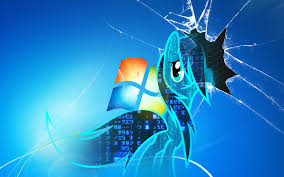

Types of Computer Viruses
This is a list of common types of computer viruses.
- Boot sector viruses
- Program viruses
- Multipartite viruses
- Stealth viruses
- Macro viruses
- Polymorphic viruses
- Active X viruses
- Browser hijacker
- Resident viruses
- File infector viruses
- List of malwares which are generally categorized as computer viruses:
- Computer Worms
- Trojan horse
- Spam virus
- Spyware
- Zombies
Malware

Malware (a portmanteau for malicious software) is any software intentionally designed to cause damage to a computer, server, client, or computer network (by contrast, software that causes unintentional harm due to some deficiency is typically described as a software bug). A wide variety of types of malware exist, including computer viruses, worms, Trojan horses, ransomware, spyware, adware, rogue software, and scareware.
Programs are also considered malware if they secretly act against the interests of the computer user. For example, at one point Sony music Compact discs silently installed a rootkit on purchasers' computers with the intention of preventing illicit copying, but which also reported on users' listening habits, and unintentionally created extra security vulnerabilities.
A range of antivirus software, firewalls and other strategies are used to help protect against the introduction of malware, to help detect it if it is already present, and to recover from malware-associated malicious activity and attacks.
Malware is sometimes used broadly against government or corporate websites to gather guarded information, or to disrupt their operation in general. However, malware can be used against individuals to gain information such as personal identification numbers or details, bank or credit card numbers, and passwords.
Since the rise of widespread broadband Internet access, malicious software has more frequently been designed for profit. Since 2003, the majority of widespread viruses and worms have been designed to take control of users' computers for illicit purposes.[10] Infected "zombie computers" can be used to send email spam, to host contraband data such as child pornography,or to engage in distributed denial-of-service attacks as a form of extortion.
Programs designed to monitor users' web browsing, display unsolicited advertisements, or redirect affiliate marketing revenues are called spyware. Spyware programs do not spread like viruses; instead they are generally installed by exploiting security holes. They can also be hidden and packaged together with unrelated user-installed software. The Sony BMG rootkit was intended to prevent illicit copying; but also reported on users' listening habits, and unintentionally created extra security vulnerabilities.
Ransomware affects an infected computer system in some way, and demands payment to bring it back to its normal state. There are two variations of ransomware, being crypto ransomware and locker ransomware.[14] With the locker ransomware just locking down a computer system without encrypting its contents. Whereas the traditional ransomware is one that locks down your system and encrypts the contents of the system. For example, programs such as CryptoLocker encrypt files securely, and only decrypt them on payment of a substantial sum of money.
Some malware is used to generate money by click fraud, making it appear that the computer user has clicked an advertising link on a site, generating a payment from the advertiser. It was estimated in 2012 that about 60 to 70% of all active malware used some kind of click fraud, and 22% of all ad-clicks were fraudulent.
In addition to criminal money-making, malware can be used for sabotage, often for political motives. Stuxnet, for example, was designed to disrupt very specific industrial equipment. There have been politically motivated attacks which spread over and shut down large computer networks, including massive deletion of files and corruption of master boot records, described as "computer killing." Such attacks were made on Sony Pictures Entertainment (25 November 2014, using malware known as Shamoon or W32.Disttrack) and Saudi Aramco (August 2012).
Infectious malware
Main articles: Computer virus and Computer worm
The best-known types of malware, viruses and worms, are known for the manner in which they spread, rather than any specific types of behavior. A computer virus is software that embeds itself in some other executable software (including the operating system itself) on the target system without the user's knowledge and consent and when it is run, the virus is spread to other executables. On the other hand, a worm is a stand-alone malware software that actively transmits itself over a network to infect other computers. These definitions lead to the observation that a virus requires the user to run an infected software or operating system for the virus to spread, whereas a worm spreads itself.[19]
Concealment
These categories are not mutually exclusive, so malware may use multiple techniques.[20] This section only applies to malware designed to operate undetected, not sabotage and ransomware.
See also: Polymorphic packer
Viruses
Main article: Computer virus
A computer virus is software usually hidden within another seemingly innocuous program that can produce copies of itself and insert them into other programs or files, and that usually performs a harmful action (such as destroying data).[21] An example of this is a PE infection, a technique, usually used to spread malware, that inserts extra data or executable code into PE files.[22]
Screen-locking ransomware
Main article: Ransomware
'Lock-screens', or screen lockers is a type of “cyber police” ransomware that blocks screens on Windows or Android devices with a false accusation in harvesting illegal content, trying to scare the victims into paying up a fee.[23] Jisut and SLocker impact Android devices more than other lock-screens, with Jisut making up nearly 60 percent of all Android ransomware detections.[24]
Trojan horses
Main article: Trojan horse (computing)
A Trojan horse is a harmful program that misrepresents itself to masquerade as a regular, benign program or utility in order to persuade a victim to install it. A Trojan horse usually carries a hidden destructive function that is activated when the application is started. The term is derived from the Ancient Greek story of the Trojan horse used to invade the city of Troy by stealth.[25][26][27][28][29]
Trojan horses are generally spread by some form of social engineering, for example, where a user is duped into executing an e-mail attachment disguised to be unsuspicious, (e.g., a routine form to be filled in), or by drive-by download. Although their payload can be anything, many modern forms act as a backdoor, contacting a controller which can then have unauthorized access to the affected computer.[30] While Trojan horses and backdoors are not easily detectable by themselves, computers may appear to run slower due to heavy processor or network usage.
Unlike computer viruses and worms, Trojan horses generally do not attempt to inject themselves into other files or otherwise propagate themselves.[31]
In spring 2017 Mac users were hit by the new version of Proton Remote Access Trojan (RAT)[32] trained to extract password data from various sources, such as browser auto-fill data, the Mac-OS keychain, and password vaults.[33]
Rootkits
Main article: Rootkit
Once malicious software is installed on a system, it is essential that it stays concealed, to avoid detection. Software packages known as rootkits allow this concealment, by modifying the host's  operating system so that the malware is hidden from the user. Rootkits can prevent a harmful process from being visible in the system's list of processes, or keep its files from being read.[34]
Some types of harmful software contain routines to evade identification and/or removal attempts, not merely to hide themselves. An early example of this behavior is recorded in the Jargon File tale of a pair of programs infesting a Xerox CP-V time sharing system:
Each ghost-job would detect the fact that the other had been killed, and would start a new copy of the recently stopped program within a few milliseconds. The only way to kill both ghosts was to kill them simultaneously (very difficult) or to deliberately crash the system.[35]
Backdoors
Main article: Backdoor (computing)
A backdoor is a method of bypassing normal authentication procedures, usually over a connection to a network such as the Internet. Once a system has been compromised, one or more backdoors may be installed in order to allow access in the future,[36] invisibly to the user.
The idea has often been suggested that computer manufacturers preinstall backdoors on their systems to provide technical support for customers, but this has never been reliably verified. It was reported in 2014 that US government agencies had been diverting computers purchased by those considered "targets" to secret workshops where software or hardware permitting remote access by the agency was installed, considered to be among the most productive operations to obtain access to networks around the world.[37] Backdoors may be installed by Trojan horses, worms, implants, or other methods.[38][39]
Evasion
Since the beginning of 2015, a sizable portion of malware has been utilizing a combination of many techniques designed to avoid detection and analysis.[40] From the more common, to the least common:
evasion of analysis and detection by fingerprinting the environment when executed.[41]
confusing automated tools' detection methods. This allows malware to avoid detection by technologies such as signature-based antivirus software by changing the server used by the malware.
timing-based evasion. This is when malware runs at certain times or following certain actions taken by the user, so it executes during certain vulnerable periods, such as during the boot process, while remaining dormant the rest of the time.
obfuscating internal data so that automated tools do not detect the malware.[43]
An increasingly common technique (2015) is adware that uses stolen certificates to disable anti-malware and virus protection; technical remedies are available to deal with the adware.
Nowadays, one of the most sophisticated and stealthy ways of evasion is to use information hiding techniques, namely stegomalware. A survey on stegomalware was published by Cabaj et al. in 2018.
Another type of evasion technique is Fileless malware or Advanced Volatile Threats (AVTs). Fileless malware does not require a file to operate. It runs within memory and utilizes existing system tools to carry out malicious acts. Because there are no files on the system, there are no executable files for antivirus and forensic tools to analyze, making such malware nearly impossible to detect. The only way to detect fileless malware is to catch it operating in real time. Recently these type attacks have become more frequent with a 432% increase in 2017 and makeup 35% of the attacks in 2018. Such attacks are not easy to perform but are becoming more prevalent with the help of exploit-kits.
operating system so that the malware is hidden from the user. Rootkits can prevent a harmful process from being visible in the system's list of processes, or keep its files from being read.[34]
Some types of harmful software contain routines to evade identification and/or removal attempts, not merely to hide themselves. An early example of this behavior is recorded in the Jargon File tale of a pair of programs infesting a Xerox CP-V time sharing system:
Each ghost-job would detect the fact that the other had been killed, and would start a new copy of the recently stopped program within a few milliseconds. The only way to kill both ghosts was to kill them simultaneously (very difficult) or to deliberately crash the system.[35]
Backdoors
Main article: Backdoor (computing)
A backdoor is a method of bypassing normal authentication procedures, usually over a connection to a network such as the Internet. Once a system has been compromised, one or more backdoors may be installed in order to allow access in the future,[36] invisibly to the user.
The idea has often been suggested that computer manufacturers preinstall backdoors on their systems to provide technical support for customers, but this has never been reliably verified. It was reported in 2014 that US government agencies had been diverting computers purchased by those considered "targets" to secret workshops where software or hardware permitting remote access by the agency was installed, considered to be among the most productive operations to obtain access to networks around the world.[37] Backdoors may be installed by Trojan horses, worms, implants, or other methods.[38][39]
Evasion
Since the beginning of 2015, a sizable portion of malware has been utilizing a combination of many techniques designed to avoid detection and analysis.[40] From the more common, to the least common:
evasion of analysis and detection by fingerprinting the environment when executed.[41]
confusing automated tools' detection methods. This allows malware to avoid detection by technologies such as signature-based antivirus software by changing the server used by the malware.
timing-based evasion. This is when malware runs at certain times or following certain actions taken by the user, so it executes during certain vulnerable periods, such as during the boot process, while remaining dormant the rest of the time.
obfuscating internal data so that automated tools do not detect the malware.[43]
An increasingly common technique (2015) is adware that uses stolen certificates to disable anti-malware and virus protection; technical remedies are available to deal with the adware.
Nowadays, one of the most sophisticated and stealthy ways of evasion is to use information hiding techniques, namely stegomalware. A survey on stegomalware was published by Cabaj et al. in 2018.
Another type of evasion technique is Fileless malware or Advanced Volatile Threats (AVTs). Fileless malware does not require a file to operate. It runs within memory and utilizes existing system tools to carry out malicious acts. Because there are no files on the system, there are no executable files for antivirus and forensic tools to analyze, making such malware nearly impossible to detect. The only way to detect fileless malware is to catch it operating in real time. Recently these type attacks have become more frequent with a 432% increase in 2017 and makeup 35% of the attacks in 2018. Such attacks are not easy to perform but are becoming more prevalent with the help of exploit-kits.
Harmful Effects of Computer Viruses
Can corrupt your system file and slow down your computer system
Can make some programs corrupt or faulty
Can damage computer's boot sector
Can steal your computer's information and send it to another person
Can delete your complete hard drive
Can display irrelevant and annoying messages on your computer screen
Can change the power rating of your computer which may cause of blast
Back to home